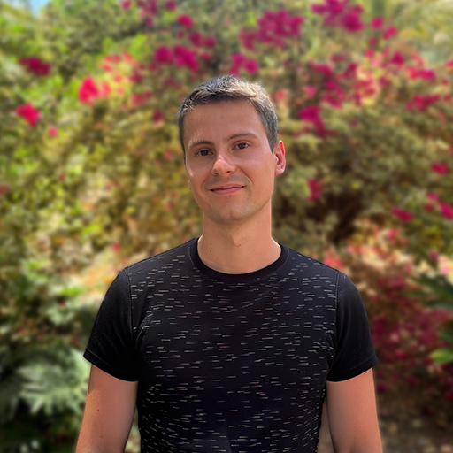

PhD in Computer Science specialized in robust AI. Proven track record in high-performance software engineering at AWS and SAP, complemented by research on reliable ML methodologies for noisy data conditions with publications at TMLR, UAI, and ECML. Expert in bridging the gap between theoretical ML and production-grade systems.